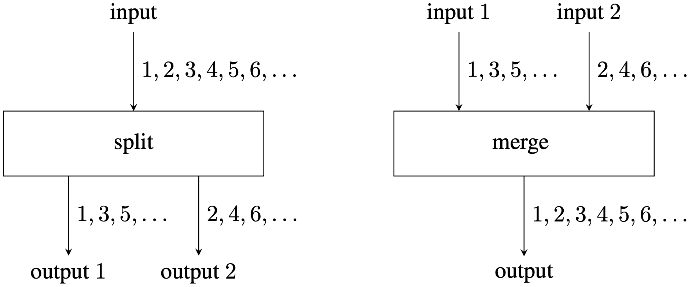

ICPC World Finals 2021 · Problem J
A splitstream system is an acyclic network of nodes that processes finite sequences of numbers. There are two types of nodes (illustrated in Figure J.1):

The overall network has one input, which is the sequence of positive integers 1, 2, 3, …, m. Any output of any node can be queried. A query will seek to identify the kth number in the sequence of numbers for a given output and a given k. Your task is to implement such queries efficiently.
The first line of input contains three integers m, n, and q, where m (1 ≤ m ≤ 109) is the length of the input sequence, n (1 ≤ n ≤ 104) is the number of nodes, and q (1 ≤ q ≤ 103) is the number of queries. The next n lines describe the network, one node per line. A split node has the format S x y z, where x, y and z identify its input, first output and second output, respectively. A merge node has the format M x y z, where x, y and z identify its first input, second input and output, respectively. Identifiers x, y and z are distinct positive integers. The overall input is identified by 1, and the remaining input/output identifiers form a consecutive sequence beginning at 2. Every input identifier except 1 appears as exactly one output. Every output identifier appears as the input of at most one node.
Each of the next q lines describes a query. Each query consists of two integers x and k, where x (2 ≤ x ≤ 105) is a valid output identifier and k (1 ≤ k ≤ 109) is the index of the desired number in that sequence. Indexing in a sequence starts with 1.
For each query x and k output one line with the kth number in the output sequence identified by x, or none if there is no element with that index number.
200 2 2 S 1 2 3 M 3 2 4 4 99 4 100
100 99
100 3 6 S 1 4 2 S 2 3 5 M 3 4 6 6 48 6 49 6 50 6 51 6 52 5 25
47 98 49 51 53 100
2 3 3 S 1 2 3 S 3 4 5 M 5 2 6 3 1 5 1 6 2
2 none none